CRVI000091Nobukazu Takemura - Scope
Designer unknown · Thrill Jockey · 1999
Designer unknown · Thrill Jockey · 1999

CRVI000232Abstract Truth - Get Another Plan
Designer unknown · Streetwave Music · 1996
Designer unknown · Streetwave Music · 1996

CRVI000402Matthew Herbert - Around the House
Designer unknown · Studio IK7 · 1998
Designer unknown · Studio IK7 · 1998

CRVI000400C+C Music Factory - Gonna Make You Sweat
Designer unknown · CBS · 1990
Designer unknown · CBS · 1990

CRVI000237Bullitnuts - 1st Of The Day
Designer unknown · Pork Recordings · 1996
Designer unknown · Pork Recordings · 1996

CRVI000239Landslide - Drum And Bossa
Designer unknown · Hospital · 1998
Designer unknown · Hospital · 1998

CRVI000227Beats International - Let Them Eat Bingo
Designer unknown · Go! Beat · 1990
Designer unknown · Go! Beat · 1990

CRVI000769Paula Scher - Venus
The Public Theater · 1996
The Public Theater · 1996

CRVI000105Masuteru Aoba - 10th Anniversary of "Tategumi Yokogumi" Magazine
Morisawa & Company Ltd. · Silkscreen · 1993
Morisawa & Company Ltd. · Silkscreen · 1993

CRVI000415Candyman - Ain't No Shame In My Game
Designer unknown · Épie · 1990
Designer unknown · Épie · 1990

CRVI000242Shazz - Shazz
Designer unknown · Columbia · 1998
Designer unknown · Columbia · 1998

CRVI000248Tetsuya Ishida - Mebae
Exhibition Poster · 1998 · 1998
Exhibition Poster · 1998 · 1998
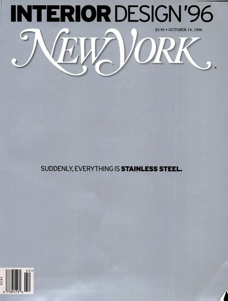
CRVI000611Unknown - Suddenly, Everything Is Stainless Steel.
New York, October 14, 1996 · 1996
New York, October 14, 1996 · 1996

CRVI000231Reminiscence Quartet - Psycodelico
Designer unknown · Yellow Productions · 1995
Designer unknown · Yellow Productions · 1995
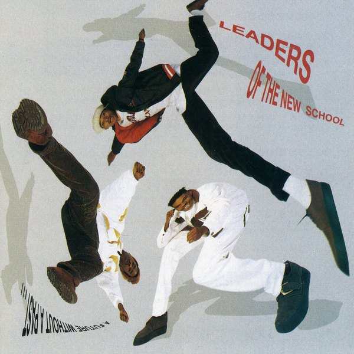
CRVI000420Leaders Of The New School - A Future Without A Past...
Designer unknown · Elektra · 1991
Designer unknown · Elektra · 1991

CRVI000054Autechre - Amber
Designed by The Designers Republic · Warp Records · 1994
Designed by The Designers Republic · Warp Records · 1994

CRVI000756Tetsuya Ishida - Public Property
Kōkyōbutsu · acrylic on canvas · 1999
Kōkyōbutsu · acrylic on canvas · 1999

CRVI000055Polygon Window - Surfing on Sine Waves
Artwork by The Designers Republic · Warp Records · 1992
Artwork by The Designers Republic · Warp Records · 1992
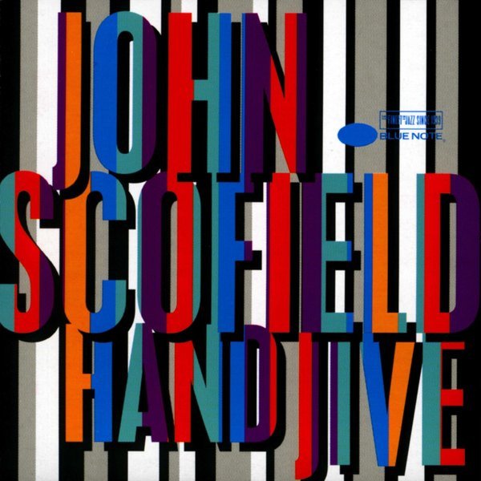
CRVI001158John Scofield - Hand Jive
Designed by Mark Larson, photograph by Patti Perret · Blue Note CDP 7243 8 27327 2 3 · 1994
Designed by Mark Larson, photograph by Patti Perret · Blue Note CDP 7243 8 27327 2 3 · 1994

CRVI000432Belle and Sebastian - If You're Feeling Sinister
Designer unknown · Jeepster Records · 1996
Designer unknown · Jeepster Records · 1996

CRVI000832Seymour Chwast - Cars IV
Lithograph · calendar page · 30 × 48 cm · 1996
Lithograph · calendar page · 30 × 48 cm · 1996

CRVI000413Redhead Kingpin & The F.B.I. - A Shade Of Red
Designer unknown · Virgin · 1990
Designer unknown · Virgin · 1990

CRVI000373Mint Condition - Meant To Be Mint
Designer unknown · Perspective · 1991
Designer unknown · Perspective · 1991

CRVI000096Stock, Hausen & Walkman - Organ Transplants Vol. 1
Designer unknown · Hot Air · 1996
Designer unknown · Hot Air · 1996

CRVI000397Frankie Knuckles - Beyond The Mix
Designer unknown · Virgin · 1991
Designer unknown · Virgin · 1991

CRVI000229Paolo Achenza Trio - Do It
Designer unknown · Right Tempo · 1994
Designer unknown · Right Tempo · 1994

CRVI000319Cornelius - Fantasma
Designer unknown · Trattoria · 1997
Designer unknown · Trattoria · 1997

CRVI000101p-Ziq - Lunatic Harness
Designer unknown · Planet Mu · 1997
Designer unknown · Planet Mu · 1997

CRVI000228Us3 - Hand On The Torch
Typography by Stylorouge · Blue Note CDP 0777 7 80883 2 5 · 1993
Typography by Stylorouge · Blue Note CDP 0777 7 80883 2 5 · 1993

CRVI000037Orb - Orbus Terrarum
Artwork by MadArk · Island Records · 1995
Artwork by MadArk · Island Records · 1995

CRVI000609Unknown - First, We Kill All the Computers
New York, July 24, 1995 · 1995
New York, July 24, 1995 · 1995
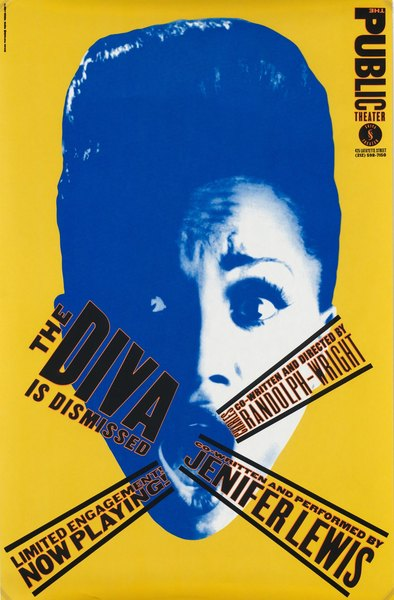
CRVI000765Paula Scher - The Diva is Dismissed
Serigraph · 116.8 × 76.5 cm · 1994
Serigraph · 116.8 × 76.5 cm · 1994

CRVI000433Neutral Milk Hotel - In The Aeroplane Over The Sea
Designer unknown · MGM Records · 1998
Designer unknown · MGM Records · 1998
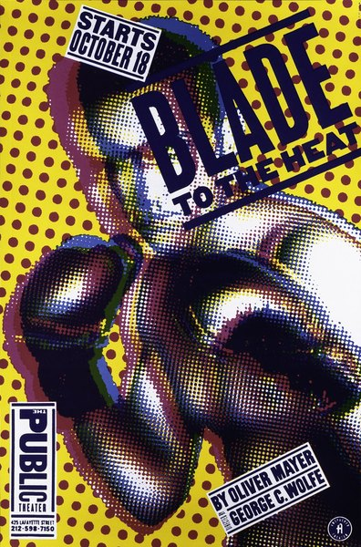
CRVI000768Paula Scher - Blade to the Heat
The Public Theater · 74 × 112 cm · 1994
The Public Theater · 74 × 112 cm · 1994

CRVI000764Paula Scher - The Public Theater, 95–96 Season
Lithograph · 152.4 × 114.3 cm · 1995
Lithograph · 152.4 × 114.3 cm · 1995
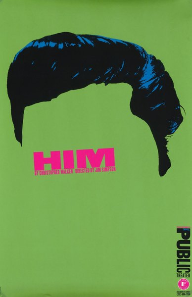
CRVI000766Paula Scher - Him
Screenprint · 116.8 × 76.5 cm · 1994
Screenprint · 116.8 × 76.5 cm · 1994

CRVI000094Various - Artificial Intelligence
Designer unknown · Warp Records · 1992
Designer unknown · Warp Records · 1992

CRVI000008Boards Of Canada - Music Has The Right To Children
Designed by Boards Of Canada · Warp Records · 1998
Designed by Boards Of Canada · Warp Records · 1998

CRVI000857Julian Stanczak - Homage
Acrylic on canvas · 1990
Acrylic on canvas · 1990

CRVI000421The UMC's - Fruits Of Nature
Designer unknown · Wild Pitch · 1991
Designer unknown · Wild Pitch · 1991

CRVI000089FUSE - Dimension Intrusion
Designer unknown · Plus 8 Records · 1993
Designer unknown · Plus 8 Records · 1993

CRVI000234Portishead - Dummy
Designer unknown · Go! Beat · 1994
Designer unknown · Go! Beat · 1994
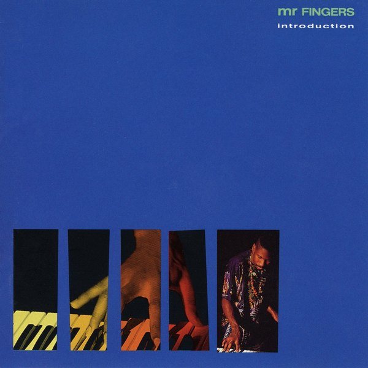
CRVI000399Mr. Fingers - Introduction
Designer unknown · MCA Records · 1992
Designer unknown · MCA Records · 1992
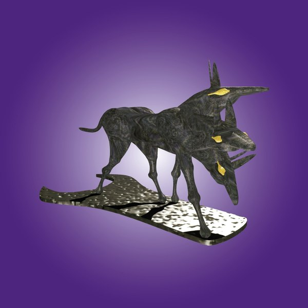
CRVI000007The Black Dog - Spanners
Designed by Black Dog Productions, Richard Burridge, Think 1 · Warp Records · 1995
Designed by Black Dog Productions, Richard Burridge, Think 1 · Warp Records · 1995

CRVI000430Teenage Fanclub - Bandwagonesque
Designer unknown · Creation · 1991
Designer unknown · Creation · 1991

CRVI000374TLC - Ooooooohhh... On The TLC Tip
Designer unknown · Laface · 1992
Designer unknown · Laface · 1992

CRVI000045Various - Artificial Intelligence II
Artwork by Phil Wolstenholme, The Designers Republic · Warp Records · 1994
Artwork by Phil Wolstenholme, The Designers Republic · Warp Records · 1994

CRVI000118Tadanori Yokoo - Garuda
Offset lithograph · 1990
Offset lithograph · 1990
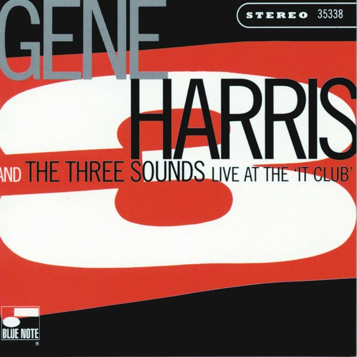
CRVI001131Gene Harris & The Three Sounds - Live At The 'It Club'
Designed by Patrick Roques · Blue Note 7243 8 35338 · 1996
Designed by Patrick Roques · Blue Note 7243 8 35338 · 1996

CRVI000256Wiesław Wałkuski - The Idiots
Film Poster Designed By Wiesław Wałkuski · 1999 · 1999
Film Poster Designed By Wiesław Wałkuski · 1999 · 1999
CRVI000422Trick Daddy - www.thug.com
Designer unknown · Slip-N-Slide · 1998
Designer unknown · Slip-N-Slide · 1998

CRVI001200The Last Poets - Holy Terror
Painting by Mati Klarwein · Rykodisc RCD 10319 · 1993
Painting by Mati Klarwein · Rykodisc RCD 10319 · 1993

CRVI000612Unknown - Scenes From New York's Therapy Crisis
New York, October 20, 1997 · 1997
New York, October 20, 1997 · 1997

CRVI000753Tetsuya Ishida - Refuel Meal
1996 · 1996
1996 · 1996

CRVI000313Shut Up and Dance - Dance Before the Police Come
Designer unknown · p And Dance · 1991
Designer unknown · p And Dance · 1991

CRVI000752Tetsuya Ishida - Awakening
1998 · 1998
1998 · 1998

CRVI000057B12 - Time Tourist
Designed by The Designers Republic, Trevor Webb · Warp Records · 1996
Designed by The Designers Republic, Trevor Webb · Warp Records · 1996
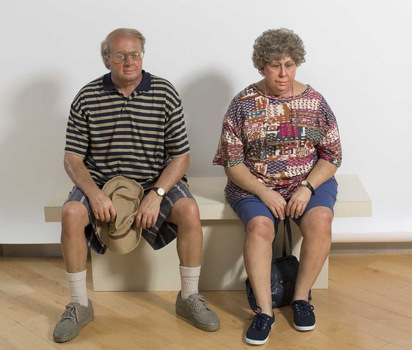
CRVI001404Duane Hanson - Old Couple on a Bench
Duane Hanson · 1995 · polychromed bronze and mixed media · 1995
Duane Hanson · 1995 · polychromed bronze and mixed media · 1995

CRVI000112Kiyoshi Awazu - Kiyoshi Awazu Exhibition & Workshop
The 43rd International Design Conference in Aspen · 1993
The 43rd International Design Conference in Aspen · 1993

CRVI000278Wiktor Sadowski - Art Center for Children and Youth
Event Poster · 1996 · 1996
Event Poster · 1996 · 1996

CRVI000858Julian Stanczak - Unbounded
1991 · 1991
1991 · 1991

CRVI001186Aïyb Dieng - Rhythmagick
Designed by Aldo Sampieri, painting by Mati Klarwein, photograph by Thi-Linh Le · Subharmonic SD7021-2 · 1997
Designed by Aldo Sampieri, painting by Mati Klarwein, photograph by Thi-Linh Le · Subharmonic SD7021-2 · 1997

CRVI000235Coldcut - Philosophy
Designer unknown · Ninja Tune · 1993
Designer unknown · Ninja Tune · 1993

CRVI000059Various - The Philosophy of Sound and Machine
Designed by Third Earth · Applied Rhythmic Technology · 1992
Designed by Third Earth · Applied Rhythmic Technology · 1992

CRVI000009The Future Sound Of London - Lifeforms
Artwork by Buggy G. Riphead · Virgin · 1994
Artwork by Buggy G. Riphead · Virgin · 1994

CRVI000078Jega - Spectrum
Designer unknown · 1998
Designer unknown · 1998

CRVI000608Unknown - Is Your Cat Contemplating Suicide?
New York, April 24, 1995 · 1995
New York, April 24, 1995 · 1995

CRVI000019Two Lone Swordsmen - Stay Down
Designed by Haywire, James Woodbourne · Warp Records · 1998
Designed by Haywire, James Woodbourne · Warp Records · 1998

CRVI000812Mark Tansey - Repairing the Wheel
Oil on canvas · 1996
Oil on canvas · 1996

CRVI001070Lo-Key? - Where Dey At?
Designed by Kevin Hosmann, photograph by Eddie Wolfl · Perspective Records 28968 1003 2 · 1992
Designed by Kevin Hosmann, photograph by Eddie Wolfl · Perspective Records 28968 1003 2 · 1992
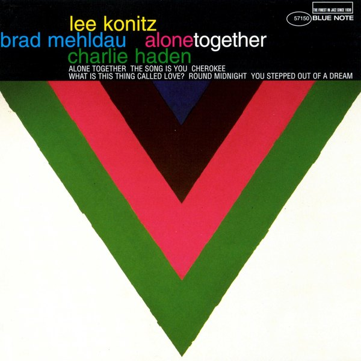
CRVI001121Lee Konitz, Brad Mehldau, Charlie Haden - Alone Together
Designed by Patrick Roques, painting by Kenneth Noland · Blue Note 7243 8 57150 2 0 · 1997
Designed by Patrick Roques, painting by Kenneth Noland · Blue Note 7243 8 57150 2 0 · 1997

CRVI000315Leftfield - Leftism
Designer unknown · Hard Hands · 1995
Designer unknown · Hard Hands · 1995

CRVI000755Tetsuya Ishida - Untitled
1998 · 1998
1998 · 1998

CRVI000759Tetsuya Ishida - Rooftop Refugee
Acrylic on board · 145.8 × 103.3 cm · 1996
Acrylic on board · 145.8 × 103.3 cm · 1996
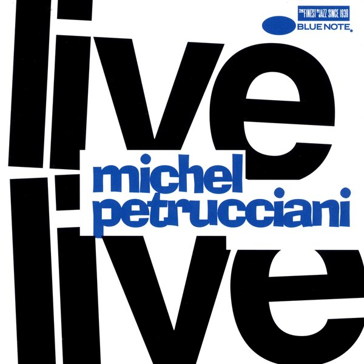
CRVI001167Michel Petrucciani - Live
Designed by Patrick Roques · Blue Note CDP 7 95480 2 · 1991
Designed by Patrick Roques · Blue Note CDP 7 95480 2 · 1991

CRVI000314Underworld - Dubnobasswithmyheadman
Designer unknown · Junior Boy's Own · 1994
Designer unknown · Junior Boy's Own · 1994
CRVI000610Unknown - The Coming Republican Crack-Up
New York, March 4, 1996 · 1996
New York, March 4, 1996 · 1996

CRVI000751Tetsuya Ishida - Exercise Equipment
Acrylic on board · 103 × 145.6 cm · 1997
Acrylic on board · 103 × 145.6 cm · 1997

CRVI000419KMD - Mr. Hood
Designer unknown · Elektra · 1991
Designer unknown · Elektra · 1991

CRVI000750Tetsuya Ishida - Supermarket
Acrylic on board · 103 × 145.6 cm · 1996
Acrylic on board · 103 × 145.6 cm · 1996

CRVI000236Kruder & Dorfmeister - G-Stoned
Designer unknown · G-Stone Recordings · 1993
Designer unknown · G-Stone Recordings · 1993

CRVI000757Tetsuya Ishida - Gripe
Acrylic on canvas mounted on board · 42.2 × 59.4 cm · 1997
Acrylic on canvas mounted on board · 42.2 × 59.4 cm · 1997
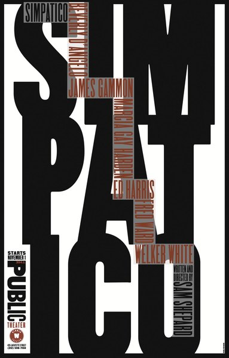
CRVI000767Paula Scher - Simpatico
The Public Theater · 1994
The Public Theater · 1994

CRVI000412Heavy D & The Boyz - Peaceful Journey
Designer unknown · Uptown · 1991
Designer unknown · Uptown · 1991

CRVI000029Squarepusher - Feed Me Weird Things
Designed by Johnny Clayton, Tom Jenkinson · Rephlex · 1996
Designed by Johnny Clayton, Tom Jenkinson · Rephlex · 1996

CRVI000233Portishead - Portishead
Designer unknown · Go! Beat · 1997
Designer unknown · Go! Beat · 1997

CRVI000160Kazumasa Nagai - Kazumasa Nagai Exhibition - Design Gallery
Designed by Kazumasa Nagai · 1991
Designed by Kazumasa Nagai · 1991

CRVI000311Carl Craig - More Songs About Food And Revolutionary Art
Designer unknown · Planet E · 1997
Designer unknown · Planet E · 1997

CRVI000776IBM - Eight-Striped Logos
IBM House Style · Graphic Design Guidelines, March 1991 · 1991
IBM House Style · Graphic Design Guidelines, March 1991 · 1991

CRVI000240Sunship - Sunship
Designer unknown · Filter · 1997
Designer unknown · Filter · 1997

CRVI000820Seymour Chwast - DesignTalk Lectures
Mohawk · 61 × 89 cm · 1996
Mohawk · 61 × 89 cm · 1996